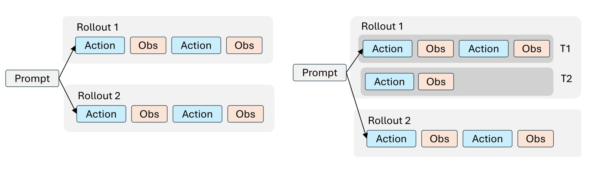

Trainer Configuration¶
Agent Lightning v1.0 adds its configuration on top of verl's ppo_trainer Hydra configuration. The complete default configuration from agentlightning/verl/config.yaml is shown below. The following sections explain these settings in detail.
Complete default configuration added by Agent Lightning:
algorithm:
enable_rollout_level_advantage: true
agentlightning:
agl_base_url: http://localhost:8080
agl_key: ""
hooks: null
rollout_timeout_seconds: 1800
local:
agent_class: null
env_map: {}
k8s:
job_template_path: null
reward_fillna_value: 0.0
max_ppo_update_times: null
trace_aggregator:
level: trajectory # transition | trajectory
trajectory_max_prompt_length: 2048
trajectory_max_response_length: 8192
async_rollout:
enabled: false
async_train_batch_size: null
actor_rollout_ref:
actor:
policy_loss:
loss_mode: per_rollout_mean
The configuration above shows the Agent Lightning settings. At runtime, these settings are merged with the original verl ppo_trainer configuration, whose existing options remain available and take effect as usual.
Connect to the API Gateway¶
The first group of settings connects the trainer to the Agent Lightning API Gateway:
| Key | Default | Description |
|---|---|---|
agentlightning.agl_base_url |
http://localhost:8080 |
Gateway URL used by the rollout manager. |
agentlightning.agl_key |
"" |
Bearer key; must match the API Gateway and Controller. |
Make sure the machine running the trainer can reach the Gateway at agentlightning.agl_base_url. The Hydra agl_key value must be identical in the trainer, API Gateway, and Controller configurations.
Model and Data¶
Model configuration follows the standard verl actor_rollout_ref.model settings. Set actor_rollout_ref.model.path to a Hugging Face model name or local model path:
In upstream verl, dataset paths are normally configured with data.train_files and data.val_files. Agent Lightning instead loads the files first and passes the resulting datasets directly to run_ppo. This provides additional flexibility: users can pass any dataset as long as it can be represented as a list of JSON objects.
from datasets import Dataset
from agentlightning.verl.entrypoint import run_ppo
train_dataset = Dataset.from_parquet("data/train.parquet").to_list()
val_dataset = Dataset.from_parquet("data/test.parquet").to_list()
run_ppo(config, train_dataset=train_dataset, val_dataset=val_dataset)
run_ppo accepts non-empty in-memory sequences as train_dataset and val_dataset. Each element is read as a JSON-like object. When the trainer creates a rollout, each element in the list becomes the rollout's input field. The Controller can then map fields from input into the agent's environment or Kubernetes Job template.
Rollout execution¶
The Controller has two execution modes: local and k8s. Configure the matching section below, and the Controller reads that section according to its running mode.
| Key | Default | Description |
|---|---|---|
agentlightning.local.agent_class |
null |
Fully qualified Python class imported and started by the Controller in local mode. |
agentlightning.local.env_map |
{} |
Maps environment variable names to fields in the rollout input. |
agentlightning.k8s.job_template_path |
null |
Path to the Jinja Kubernetes Job template used by the Controller in K8s mode. |
For local execution, set the agent class and map fields from each dataset row into environment variables. For example:
agentlightning:
local:
agent_class: examples.search_r1.agents.search_r1_agent.SearchR1Agent
env_map:
QUESTION: input.question
GOLDEN_ANSWERS: input.golden_answers
Here, the Controller imports SearchR1Agent, starts one local subprocess for each rollout, and sets QUESTION and GOLDEN_ANSWERS from that rollout's input object.
In K8s mode, provide a Jinja template that renders to a Kubernetes Job YAML manifest:
The template can use values from the rollout input. For example, this fragment replaces the environment-variable values with fields from the current dataset row:
env:
- name: QUESTION
value: {{ input.question | yaml_escape }}
- name: RESULT
value: {{ input.result | yaml_escape }}
The trainer reads the Jinja template and includes its text in each rollout. The Controller renders it with that rollout's input, then creates one Kubernetes Job per rollout.
Finally, agentlightning.rollout_timeout_seconds sets the maximum execution time for each rollout in both modes. The Controller uses this value and marks a rollout as failed if it does not finish within the configured number of seconds. The default is 1800.
Trace aggregator¶

The left side of the diagram shows traditional agentic RL, where each rollout corresponds to one training sample. The right side shows Agent Lightning, where one rollout can correspond to multiple training samples. During a rollout, the Gateway collects all raw LLM calls as prompt-response pairs, and the trace aggregator assembles them into training samples using one of the following two modes.
Trajectory mode¶
trajectory is the default and recommended mode:
agentlightning:
trace_aggregator:
level: trajectory
trajectory_max_prompt_length: 2048
trajectory_max_response_length: 8192
The aggregator automatically merges consecutive calls when the next prompt starts with the exact token sequence of the previous prompt and response. Tokens added between calls, such as tool observations, are retained as context but masked from the policy loss. If exact token-prefix continuity is broken, the aggregator starts a new training row instead of merging incompatible calls.
In this mode:
trajectory_max_prompt_lengthlimits the initial prompt in each merged training row;trajectory_max_response_lengthlimits all content after the initial prompt. This includes the prompts and responses from later turns, which are merged into the trajectory response sequence.
We recommend setting trajectory_max_response_length relatively high so it can hold multiple turns without truncation. Choose a value that covers the expected combined length of later-turn prompts and responses while fitting the model context window and available GPU memory.
Training rows whose initial prompt exceeds trajectory_max_prompt_length are marked and dropped from the policy-update batch. Content beyond trajectory_max_response_length, on the other hand, is truncated to the configured response length.
The number of dropped and truncated rows is reported to W&B with these metrics:
training/n_sample_dropped/marked— rows dropped because their prompts exceeded the configured prompt limit;training/n_truncated_sample— rows whose responses were truncated to the configured response limit.
Transition mode¶
In transition mode, every model call becomes an independent training row and no calls are merged:
agentlightning:
trace_aggregator:
level: transition
data:
max_prompt_length: 4096
max_response_length: 2048
Transition mode does not use trajectory_max_prompt_length or trajectory_max_response_length. It uses the same standard verl data limits used for individual vLLM rollout calls:
data.max_prompt_lengthlimits each call's prompt;data.max_response_lengthlimits each call's response.
Use transition mode when every request-response call should remain a separate training sample.
Algorithm correctness¶
The following settings control how rollout data contributes to optimization:
algorithm:
enable_rollout_level_advantage: true
actor_rollout_ref:
actor:
policy_loss:
loss_mode: per_rollout_mean
agentlightning:
max_ppo_update_times: 2
Rollout-level advantage¶
algorithm.enable_rollout_level_advantage: true computes the advantage at the rollout level rather than independently at the training-sample level. This is important because one rollout can produce a variable number of training rows after trace aggregation.
Per-rollout mean loss¶
actor_rollout_ref.actor.policy_loss.loss_mode: per_rollout_mean normalizes the policy loss at the rollout level. It prevents a rollout from receiving more optimization weight only because it produced more training rows.
For the motivation and detailed formulation of rollout-level advantage and loss normalization, see the Agent Lightning v1.0 technical report.
Maximum PPO update times¶
In extreme cases, trace aggregation may produce too many training samples from one collected batch, which can increase the number of PPO updates and affect training stability. agentlightning.max_ppo_update_times limits the maximum number of PPO mini-batch updates performed for one batch.
The default value is null, which applies no explicit update cap. In this case, the trainer uses all complete PPO mini-batches collected for the step; only samples that do not fill a complete mini-batch are dropped for alignment.
For additional training stability, we recommend setting it to 2. Samples beyond this limit are dropped before the policy update. The number of samples dropped for mini-batch alignment or this update cap is reported in W&B through training/n_sample_dropped/same_reward and training/n_sample_dropped/random.
Asynchronous training¶
Agent Lightning supports collocated asynchronous rollout collection through agentlightning.async_rollout. For configuration, behavior, and constraints, see Asynchronous Training.